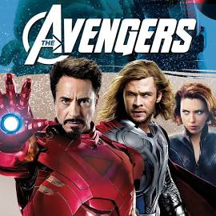
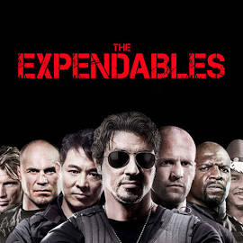
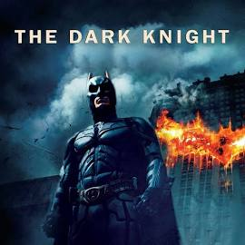

John Wick: De volta ao jogo

John Wick é um lendário assassino de aluguel aposentado que lida com o luto após perder o grande amor de sua vida. Um gângster invade sua casa, mata seu cachorro e rouba seu carro e ele é forçado a voltar à ativa para iniciar sua vingança.
Querido John

Um soldado em serviço e uma universitária se apaixonam, mas são forçados a viver separados por anos. Através de cartas, mantêm viva sua conexão à distância, enquanto enfrentam desafios que testam seu amor e transformam inesperadamente seu futuro.
John Carter - Entre Dois Mundos

Quando o veterano da Guerra Civil John Carter acorda misteriosamente na superfície de Marte, ele não tem ideia da aventura que o aguarda. Ele acaba se envolvendo em um conflito épico entre os habitantes do planeta e o destino de todos está em suas mãos.
Os Vingadores
Loki, o irmão de Thor, ganha acesso ao poder ilimitado do cubo cósmico ao roubá-lo de dentro das instalações da S.H.I.E.L.D. Nick Fury, o diretor desta agência internacional que mantém a paz, logo reúne os únicos super-heróis que serão capazes de defender a Terra de ameaças sem precedentes. Homem de Ferro, Capitão América, Hulk, Thor, Viúva Negra e Gavião Arqueiro formam o time dos sonhos de Fury, mas eles precisam aprender a colocar os egos de lado e agir como um grupo em prol da humanidade.
Os Mercenários
Um grupo de mercenários, liderado por Barney Ross e composto de seus homens de confiança, aceita uma missão que parece ser rotineira: uma operação secreta, a mando da Igreja, para invadir o país sul-americano de Vilena e derrubar seu ditador. Não demora muito para o grupo perceber que a missão é uma operação suicida. Presos em uma perigosa teia de traições, mas sabendo que um inocente está em perigo, Barney e seus homens decidem finalizar o trabalho.
Batman: O Cavaleiro das Trevas
Batman tem conseguido manter a ordem em Gotham com a ajuda de Jim Gordon e Harvey Dent. No entanto, um jovem e anárquico criminoso, conhecido apenas como Coringa, pretende testar o Cavaleiro das Trevas e mergulhar a cidade em um verdadeiro caos.
Tropa de Elite

Nascimento, capitão da tropa de elite do Rio de Janeiro, é escolhido para chefiar uma das equipes cuja missão é apaziguar o Morro do Turano. Ele precisa cumprir as ordens enquanto procura por um substituto para ficar em seu lugar. Em meio a um tiroteio, Nascimento e sua equipe resgatam Neto e Matias, dois aspirantes a oficiais da PM. Ansiosos para entrar em ação, os dois se candidatam ao curso de formação do Batalhão de Operações Policiais Especiais.
Como Treinar seu Dragão

Soluço é um jovem viking que não tem capacidade para lutar contra os dragões, como é a tradição local. Sua vida muda quando ele ajuda um dragão que lhe mostra toda a verdade. Juntos, eles tentam provar que dragões e humanos podem ser amigos.
Como se Fosse a Primeira Vez
Henry Roth é um veterinário paquerador que vive no Havaí e famoso pelo grande número de turistas que conquista. Seu novo alvo é Lucy Whitmore, que mora no local e por quem Henry se apaixona perdidamente. No entanto, Lucy sofre de falta de memória de curto prazo e se esquece rapidamente de fatos que acabaram de acontecer. Assim, Henry é obrigado a conquistá-la, dia após dia, para ficar ao seu lado.
As Branquelas
Dois irmãos agentes do FBI, Marcus e Kevin Copeland, acidentalmente evitam que bandidos sejam presos em uma apreensão de drogas. Como castigo, eles são forçados a escoltar um par de socialites nos Hamptons. Quando as meninas descobrem o plano da agência, elas se recusam a ir. Sem opções, Marcus e Kevin, dois homens negros, decidem fingir que são as irmãs e se transformam em um par de loiras.